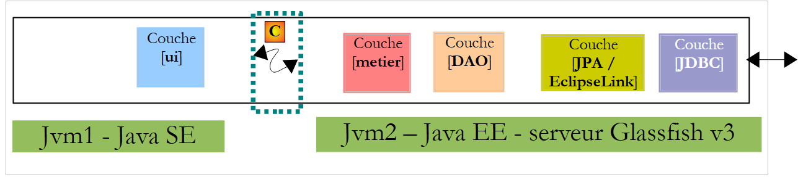
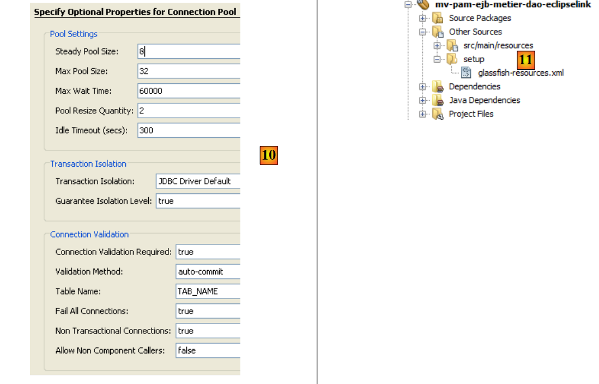
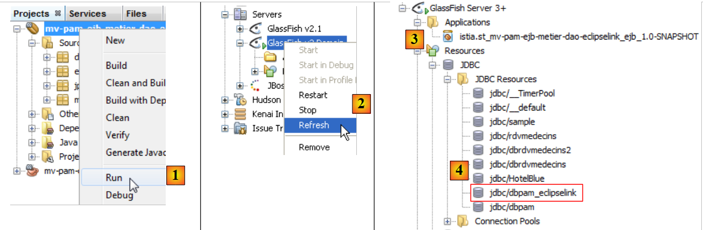
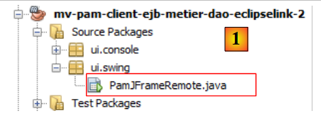
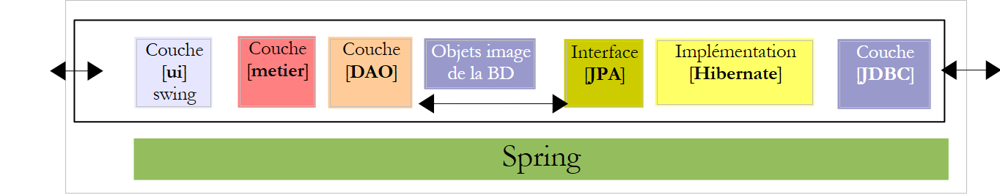
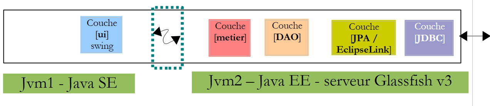

7. Version 3: Porting the PAM application to a Glassfish application server
We propose to place the EJB components of the [metier] and [DAO] layers of the OpenEJB / EclipseLink architecture into the container of an application server Glassfish.
The current implementation with OpenEJB / EclipseLink
 |
Above, the [ui] layer uses the remote interface of the [metier] layer.
We tested two execution contexts: local and remote. In the latter mode, the [ui] layer was a client of the [metier] layer, which is implemented by EJB. To operate in client/server mode, in which the client and server run in two different JVM instances, we will place the [metier, DAO, jpa] layers on the Java server EE Glassfish. This server comes with Netbeans.
The implementation to be built with the Glassfish server
 |
- the [ui] layer will run in a Java SE (Standard Edition) environment
- the [metier, DAO, JPA] layers will run in a Java EE (Enterprise Edition) environment on a Glassfish v3 server
- The client will communicate with the server via a tcp-ip network. Network exchanges are transparent to the developer, though they must still be aware that the client and server exchange serialized objects to communicate, rather than object references. The network protocol used for these exchanges is called RMI (Remote Method Invocation), a protocol usable only between two Java applications.
- The JPA implementation used on the Glassfish server will be EclipseLink.
7.1. The server- e of the PAM client/server application
7.1.1. The application architecture
Here we are examining the server component that will be hosted by the EJB3 container on the Glassfish server:
 |
The goal is to port what has already been developed and tested with the OpenEJB container to the Glassfish server. This is the benefit of OpenEJB and, more generally, of embedded EJB containers: they allow us to test the application in a simplified runtime environment. Once the application has been tested, all that remains is to deploy it to a target server, in this case the Glassfish server.
7.1.1.1. The Netbeans project
Let’s start by creating a new project Netbeans:
 |
- in [1], new project
- in [2], select the Maven category, and in [3], select the EJB Module type. The goal is to build a project that will be hosted and run by a EJB container, specifically the one on the Glassfish server.
 |
- Using the [4a] button, select the parent folder of the project folder or type its name directly in [4b].
- In [5], give the project a name
- In [6], select the application server on which it will run. The one selected here is one of those visible in the [Runtime / Servers] tab, here Glassfish v3.
- In [7], select the Java version from EE.
 |
- in [1], the new project. It differs from a standard Java project in a few ways:
- A branch named [Other Sources] [2] is automatically created. It will contain, in particular, the file [persistence.xml], which configures the layer JPA.
- if you build the project, a dependency named [3] appears. It is of type "provided" because it is supplied at runtime by the EJB container of Glassfish.
7.1.1.2. Persistence layer configuration
By "configuring the persistence layer," we mean writing the file [persistence.xml], which defines:
- the JPA implementation to be used
- the definition of the data source used by the JPA layer. This will be a JDBC source managed by the Glassfish server.
 |
Proceed as follows. First, in the [Runtime / Databases] tab, create a connection to the MySQL5 / dbpam_eclipselink database:
 |
Once this is done, you can proceed to create the resource JDBC used by the module EJB:
 |
- In [1], create a new file—make sure the EJB project is selected before performing this operation
- In [2], the EJB project
- In [3], select the category [Glassfish]
- in [4], you want to create a resource JDBC
 |
- to [5], specify that the resource JDBC will use a new connection pool. Note that a connection pool is a pool of open connections used to speed up the application’s interactions with the database.
- In [6], assign the name JNDI to the resource JDBC that was created. This name can be anything, but it often takes the form jdbc/name. This name JNDI will be used in the file [persistence.xml] to designate the data source that the implementation JPA must use.
- In [7], give any name to the connection pool that will be created
- In the [8] drop-down list, select the JDBC connection previously created based on MySQL / dbpam_eclipselink.
- In [9], a summary of the connection pool properties—do not change anything
 |
- In [10], you can specify several properties of the connection pool—leave the default values
- in [11], after completing the wizard to create a resource JDBC for the module EJB, a file named [glassfish-resources.xml] was created in the [Other Sources] branch. The contents of this file are as follows:
<?xml version="1.0" encoding="UTF-8"?>
<!DOCTYPE resources PUBLIC "-//GlassFish.org//DTD GlassFish Application Server 3.1 Resource Definitions//EN" "http://glassfish.org/dtds/glassfish-resources_1_5.dtd">
<resources>
<jdbc-resource enabled="true" jndi-name="jdbc/dbpam_eclipselink" object-type="user" pool-name="dbpamEclipselinkConnectionPool">
<description/>
</jdbc-resource>
<jdbc-connection-pool allow-non-component-callers="false" associate-with-thread="false" connection-creation-retry-attempts="0" connection-creation-retry-interval-in-seconds="10" connection-leak-reclaim="false" connection-leak-timeout-in-seconds="0" connection-validation-method="auto-commit" datasource-classname="com.mysql.jdbc.jdbc2.optional.MysqlDataSource" fail-all-connections="false" idle-timeout-in-seconds="300" is-connection-validation-required="false" is-isolation-level-guaranteed="true" lazy-connection-association="false" lazy-connection-enlistment="false" match-connections="false" max-connection-usage-count="0" max-pool-size="32" max-wait-time-in-millis="60000" name="dbpamEclipselinkConnectionPool" non-transactional-connections="false" pool-resize-quantity="2" res-type="javax.sql.DataSource" statement-timeout-in-seconds="-1" steady-pool-size="8" validate-atmost-once-period-in-seconds="0" wrap-jdbc-objects="false">
<property name="URL" value="jdbc:mysql://localhost:3306/dbpam_eclipselink"/>
<property name="User" value="root"/>
<property name="Password" value=""/>
</jdbc-connection-pool>
</resources>
The [glassfish-resources.xml] file is a XML file that contains all the data collected by the wizard. It will be used by Netbeans to request the creation of the JDBC resource required by the EJB module during its deployment on the Glassfish server.
We can now create the [persistence.xml] file, which will configure the JPA layer of the EJB module:
 |
- In [1], create a new file—make sure the EJB project is selected before performing this operation
- In [2], the EJB project
- In [3], select the category [Persistence]
- In [4], you want to create a persistence unit
 |
- in [5], give the persistence unit a name
- In [6], several implementations of JPA are offered. Here, we will choose [EclipseLink]. Other implementations can be used provided that the libraries implementing them are placed alongside those of the Glassfish server.
- In the [7] drop-down list, select the JDBC [jdbc/dbpam_eclipselink] data source that was just created.
- In [8], specify that transactions are managed by the EJB container
- In [9], specify that no operations should be performed on the data source when deploying module EJB to the server. In fact, the EJB module will use a [dbpam_eclipselink] database that has already been created.
- At the end of the wizard, a file named [persistence.xml] was created: [10]. Its contents are as follows:
<?xml version="1.0" encoding="UTF-8"?>
<persistence version="2.0" xmlns="http://java.sun.com/xml/ns/persistence" xmlns:xsi="http://www.w3.org/2001/XMLSchema-instance" xsi:schemaLocation="http://java.sun.com/xml/ns/persistence http://java.sun.com/xml/ns/persistence/persistence_2_0.xsd">
<persistence-unit name="mv-pam-ejb-metier-dao-eclipselinkPU" transaction-type="JTA">
<jta-data-source>jdbc/dbpam_eclipselink</jta-data-source>
<exclude-unlisted-classes>false</exclude-unlisted-classes>
<properties/>
</persistence-unit>
</persistence>
- line 3: the name of the persistence unit [mv-pam-ejb-metier-dao-eclipselinkPU] and the transaction type (JTA for a container EJB)
- line 5: the name JNDI of the data source used by the persistence layer: jdbc/dbpam_eclipselink
- line 6: the entities JPA are not specified. They will be searched for in the classpath of the EJB module.
- The name of the JPA implementation (Hibernate, EclipseLink, ...) used is not specified. In this case, Glassfish v3 uses EclipseLink by default.
7.1.1.3. Inserting the [jpa, DAO, metier] layers
Now that the [persistence.xml] file has been defined, we can proceed to insert the [metier, dao, jpa] layers from the [pam] enterprise application into the project:
 |
These three layers are identical to what they were with OpenEJB. We can simply copy and paste between the two projects. That is what we are doing now:
 |
- In [1], the result of copying the [jpa, dao, metier, exception] packages from the [mv-pam-openejb-eclipselink] project into the EJB and [mv-pam-ejb-metier-dao-jpa-eclipselink] modules
7.1.1.4. Configuring the Glassfish server
We still need to configure the Glassfish server in two areas:
- The JPA layer is implemented by EclipseLink. We must ensure that the Glassfish server has the libraries for this JPA implementation.
- The data source is a database named MySQL. We must ensure that the Glassfish server has the driver JDBC for this SGBD.
You may discover that these libraries are missing when deploying the EJB module. Here is one way to add missing libraries to the Glassfish server:
 |
- In [1], view the properties of the Glassfish server
- In [2], note the server’s domains folder. We’ll refer to it as <domains>
- In the <domains>\domain1\lib folder, place the missing libraries. In this example, the Hibernate libraries (lib/hibernate-tools) and the JDBC driver from MySQL (lib/misc) have been added. By default, the Glassfish server has the EclipseLink libraries. Therefore, we will only add the JDBC driver from MySQL.
 |
- In [1], on the [Services] tab, we launch the Glassfish v3 server
- in [2], it is active
7.1.1.5. Deployment of the EJB module
We are now deploying the EJB module on the Glassfish server:
 |
- In [1], the EJB module is deployed
- In [2], the tree structure of the Glassfish server is refreshed
- in [3], after deployment, the EJB module appears in the [Applications] branch of the Glassfish server
- to [4], the resource JDBC [jdbc / dbpam_eclipselink] was created on the server Glassfish. Recall that we defined it in section 7.1.1.2.
During deployment, the Glassfish server logs the following information in the console:
Note that on lines
- 3, 6, 8, and 11, the portable names JNDI of the deployed EJB. Java EE 6 introduced the concept of portable JNDI names. This indicates a JNDI name recognized by all Java EE 6 servers. With Java EE 5, the JNDI names are specific to the server used.
- 4, 7, 9, 12: the JNDI names of the EJB deployed in a form specific to Glassfish v3.
These names will be useful for the console application we are going to write to use the deployed EJB module.
7.2. Console Client - version 1
Now that we have deployed the server side of our client/server application, we will examine the client side, [1]:
 |
7.2.1. The client project
We create a new Maven project of type [Java Application] named [mv-pam-client-ejb-metier-dao-eclipselink]:
 |
- in [1], the client project
In the [pom.xml] file, we add the following dependencies:
<project xmlns="http://maven.apache.org/POM/4.0.0" xmlns:xsi="http://www.w3.org/2001/XMLSchema-instance"
xsi:schemaLocation="http://maven.apache.org/POM/4.0.0 http://maven.apache.org/xsd/maven-4.0.0.xsd">
<modelVersion>4.0.0</modelVersion>
<groupId>istia.st</groupId>
<artifactId>mv-pam-client-ejb-metier-dao-eclipselink</artifactId>
<version>1.0-SNAPSHOT</version>
<packaging>jar</packaging>
<name>mv-pam-client-ejb-metier-dao-eclipselink</name>
<url>http://maven.apache.org</url>
<repositories>
<repository>
<url>http://download.eclipse.org/rt/eclipselink/maven.repo/</url>
<id>eclipselink</id>
<layout>default</layout>
<name>Repository for library Library[eclipselink]</name>
</repository>
<repository>
<url>http://repo1.maven.org/maven2/</url>
<id>swing-layout</id>
<layout>default</layout>
<name>Repository for library Library[swing-layout]</name>
</repository>
</repositories>
<properties>
<project.build.sourceEncoding>UTF-8</project.build.sourceEncoding>
</properties>
<dependencies>
<dependency>
<groupId>org.glassfish.appclient</groupId>
<artifactId>gf-client</artifactId>
<version>3.1.1</version>
</dependency>
<dependency>
<groupId>${project.groupId}</groupId>
<artifactId>mv-pam-ejb-metier-dao-eclipselink</artifactId>
<version>${project.version}</version>
<type>ejb</type>
</dependency>
<dependency>
<groupId>org.swinglabs</groupId>
<artifactId>swing-layout</artifactId>
<version>1.0.3</version>
</dependency>
</dependencies>
</project>
- lines 31–35: the dependency on the [gf-client] library, which allows a Classfish client to communicate with a remote server,
- lines 36–41: the dependency on the Maven project for the EJB module. Here, we want to retrieve the definitions of the JPA entities and those of the various interfaces, as well as that of the [PamException] exception class,
From the [mv-pam-openejb-eclipselink] project, we copy the [MainRemote] class:
 |
Class [MainRemote] must reference EJB from layer [metier]. The code for class [MainRemote] changes as follows:
// it's okay - we can ask for the payslip
FeuilleSalaire feuilleSalaire = null;
IMetierRemote metier = null;
try {
// context JNDI of server Glassfish
InitialContext initialContext = new InitialContext();
// business layer instantiation
metier = (IMetierRemote) initialContext.lookup("java:global/istia.st_mv-pam-ejb-metier-dao-eclipselink_ejb_1.0-SNAPSHOT/Metier!metier.IMetierRemote");
// wage sheet calculation
feuilleSalaire = metier.calculerFeuilleSalaire(args[0], nbHeuresTravaillées, nbJoursTravaillés);
} catch (PamException ex) {
System.err.println("L'erreur suivante s'est produite : "
+ ex.getMessage());
return;
} catch (Exception ex) {
System.err.println("L'erreur suivante s'est produite : "
+ ex.toString());
return;
}
- line 6: initialization of the JNDI context of the Glassfish server.
- line 8: this JNDI context is asked for a reference to the remote interface of the [metier] layer. According to the logs of Glassfish, we know that the remote interface of the [metier] layer has two possible names:
Line 1, the name JNDI can be used with any application server JAVA EE 6. Line 2, the name JNDI specific to Glassfish. In the code, line 9, we use the portable name JNDI.
- The rest of the code remains unchanged
 |
In [1], we configure the project to run the [MainRemote] class with arguments. If all goes well, running the project yields the following result:
If an incorrect social security number is entered in the properties, the following result is obtained:
7.3. Client console - version 2
In previous versions, the JNDI environment of the Glassfish server was configured from a [jndi.properties] file found somewhere in the project archives. Its default content is as follows:
# JNDI access to Sun Application Server
java.naming.factory.initial=com.sun.enterprise.naming.SerialInitContextFactory
java.naming.factory.url.pkgs=com.sun.enterprise.naming
# Required to add a javax.naming.spi.StateFactory for CosNaming that
# supports dynamic RMI-IIOP.
java.naming.factory.state=com.sun.corba.ee.impl.presentation.rmi.JNDIStateFactoryImpl
org.omg.CORBA.ORBInitialHost=localhost
org.omg.CORBA.ORBInitialPort=3700
Lines 7 and 8 specify the machine running the JNDI service and its listening port. This file does not allow querying a JNDI server other than localhost or running on a port other than port 3700. If you want to change these two parameters, you can create your own [jndi.properties] file or use a Spring configuration. We will demonstrate the latter technique.
We start by creating a new project based on the initial [pam-client-metier-dao-jpa-eclipselink] project.
 |
- In [1], the new project
- in [2], the Spring configuration file [spring-config-client.xml]. Its contents are as follows:
The Spring configuration file is as follows:
<?xml version="1.0" encoding="UTF-8"?>
<beans xmlns="http://www.springframework.org/schema/beans" xmlns:xsi="http://www.w3.org/2001/XMLSchema-instance"
xmlns:tx="http://www.springframework.org/schema/tx"
xmlns:jee="http://www.springframework.org/schema/jee"
xsi:schemaLocation="
http://www.springframework.org/schema/beans
http://www.springframework.org/schema/beans/spring-beans-2.0.xsd
http://www.springframework.org/schema/tx
http://www.springframework.org/schema/tx/spring-tx-2.0.xsd
http://www.springframework.org/schema/jee
http://www.springframework.org/schema/jee/spring-jee-2.0.xsd">
<!-- business -->
<jee:jndi-lookup id="metier" jndi-name="java:global/istia.st_mv-pam-ejb-metier-dao-eclipselink_ejb_1.0-SNAPSHOT/Metier!metier.IMetierRemote">
<jee:environment>
java.naming.factory.initial=com.sun.enterprise.naming.SerialInitContextFactory
java.naming.factory.url.pkgs=com.sun.enterprise.naming
java.naming.factory.state=com.sun.corba.ee.impl.presentation.rmi.JNDIStateFactoryImpl
org.omg.CORBA.ORBInitialHost=localhost
org.omg.CORBA.ORBInitialPort=3700
</jee:environment>
</jee:jndi-lookup>
</beans>
Here we are using a <jee> tag (line 14) introduced in Spring 2.0. Using this tag requires defining the schema to which it belongs, lines 4, 10, and 11.
- Line 14: The <jee:jndi-lookup> tag is used to obtain the reference of an object from a service named JNDI. Here, the bean named "metier" is associated with the resource JNDI, which is associated with EJB and [Metier]. The name JNDI used here is the portable name (Java 6) of EJB.
- The contents of the [jndi.properties] file become the contents of the <jee:environment> tag (line 15), which is used to define the connection parameters for the JNDI service.
The main class [MainRemote] evolves as follows:
Lines 7–8: Spring is asked for the type reference [IMetierRemote] on the [metier] layer. This solution brings flexibility to our architecture. Indeed, if the EJB from the [metier] layer became local, c.a.d. executed in the same JVM as our client [MainRemote], the client’s code would remain unchanged. Only the contents of the [spring-config-client.xml] file would change. We would then find a configuration analogous to the Spring / JPA architecture discussed in Section 5.11.
Readers are invited to test this new version.
7.4. The Swing Client
We will now build the Swing client for our EJB client/server application.
 |
The [pom.xml] file must include the necessary dependency for Swing applications:
<dependency>
<groupId>org.swinglabs</groupId>
<artifactId>swing-layout</artifactId>
<version>1.0.3</version>
</dependency>
Above, the [PamJFrame] class was originally written to run in a Spring / JPA environment:
 |
Now this class must become the remote client of a EJB deployed on the Glassfish server.
 |
Practical exercise: Following the example of the [ui.console.MainRemote] console client in the project, modify the way the [doMyInit] method (see section 5.12.4) of the [PamJFrame] class to acquire a reference to the [metier] layer, which is now remote.